Sun Web Application Guidelines - Version 4.1
Sun Web Application Guidelines - Version 4.1
|
|
|
| [ Table of Contents | 0 Revision History | 1 Introduction | 2 Visual Design | 3 Windows and Pages | 4 Mastheads | 5 Top-Level Navigation | 6 Content Area | 7 Simple Elements | 8 Complex Elements | 9 Tables | 10 Topology | 11 Contextual Help | 12 Search | 13 Wizards | 14 Alerts and Messages | 15 Progress Indicators | 16 Alarms and Status Indicators | 17 Login Page | 18 Version Page | Appendices ] |
How To Use These Guidelines - An Introduction
8.6.1.2 Comparative Attribute Line Colors
8.6.3.4 Graph Title Text: Property Page
8.6.3.6 Other Graph Types and Tips
This chapter addresses the design of complex user interface elements that are used in similar ways across applications. These elements are usually groups of simple elements that together perform a more complex common interaction. In the Java Look and Feel Guidelines, they are called idioms.
When using the user interface elements described in this chapter and elsewhere in these guidelines, remember to use them with cultural considerations in mind. For example, applications must be able to format and display time, date, and calendar data according to local cultural conventions.
 To ensure that cultural considerations are addressed when using user interface controls, follow the guidelines in Appendix H, Globalization Requirements.
To ensure that cultural considerations are addressed when using user interface controls, follow the guidelines in Appendix H, Globalization Requirements.
 For most elements there are these states:
For most elements there are these states:
For fields which do not show a data value, such as the file chooser and client-side file upload, the only applicable states are enabled and disabled. The possible appearances are documented for each type of field.
For more information on the placement of read-only fields within a page, see 6.8.1 Noneditable User Interface Elements.
All buttons on components should be secondary buttons.
 Use an editable scrolling list to manage a list of single-line text strings.
Allow users to view the list of text strings, add new text strings, or remove existing text strings.
Use an editable scrolling list to manage a list of single-line text strings.
Allow users to view the list of text strings, add new text strings, or remove existing text strings.
 The editable scrolling list is not intended for strings which are so long as to cause horizontal scrolling on the page.
The editable scrolling list is not intended for strings which are so long as to cause horizontal scrolling on the page.
Here is an example with the editable scrolling list with the list below the text field (the "list-on-bottom" version):
Here is an example of an editable scrolling list with the list above the text field (the "list-on-top" version), with Move to Top and Move to Bottom buttons included:
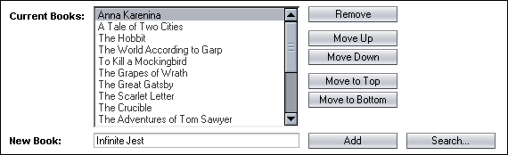
 When the editable scrolling list is noneditable (read-only), the lists and buttons should be replaced with a simple list of text strings (regardless of whether the entry field was above or below when it was editable), separated by commas, some other separator character, or line breaks like this:
When the editable scrolling list is noneditable (read-only), the lists and buttons should be replaced with a simple list of text strings (regardless of whether the entry field was above or below when it was editable), separated by commas, some other separator character, or line breaks like this:
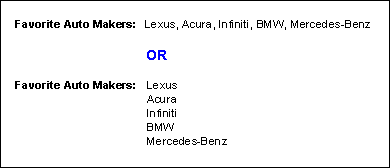
 When the editable scrolling list is disabled (does not apply in the current situation), its buttons, text field, and list should be disabled, like this:
When the editable scrolling list is disabled (does not apply in the current situation), its buttons, text field, and list should be disabled, like this:
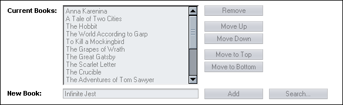
 The editable scrolling list has the following basic behavior (see the table below for more detailed button descriptions):
The editable scrolling list has the following basic behavior (see the table below for more detailed button descriptions):
The editable scrolling list differs from the 8.2 Add-and-Remove Idiom. The add-and-remove idiom is used to select any number of items from a list so that those items can be used for some other purpose. In contrast, the editable scrolling list simply enables users to add and remove items from a list of text strings.
 Use the list-on-top version or the list-on-bottom version of the editable
scrolling list, depending on the problem at hand.
Use the list-on-top version or the list-on-bottom version of the editable
scrolling list, depending on the problem at hand.
 When using the list-on-top
version, place validation error alerts (see 14.5 Validation Error Alerts) for the text field *below* the editable scrolling list so it is next to the text field to which it applies. Otherwise, it will be above the list even though it applies to the text field below.
When using the list-on-top
version, place validation error alerts (see 14.5 Validation Error Alerts) for the text field *below* the editable scrolling list so it is next to the text field to which it applies. Otherwise, it will be above the list even though it applies to the text field below.
 At the bottom of the list, include a line longer than the longest possible value, or a line a bit longer than the average/most common value, as makes sense for the expected values for the list. This line, which consists of a string of underscores (_), is programmatically kept below all the entries as items are added and removed. This strategy maintains a fixed line width for the list or minimizes the expansion/contraction when entries are added/removed, which keeps the geometry of the entire idiom stable. Otherwise, the buttons and list could move substantially based on the width of the remaining list items.
At the bottom of the list, include a line longer than the longest possible value, or a line a bit longer than the average/most common value, as makes sense for the expected values for the list. This line, which consists of a string of underscores (_), is programmatically kept below all the entries as items are added and removed. This strategy maintains a fixed line width for the list or minimizes the expansion/contraction when entries are added/removed, which keeps the geometry of the entire idiom stable. Otherwise, the buttons and list could move substantially based on the width of the remaining list items.
 Compute the number of underscores based on both the text box's width and
the font size of the underscores.
Compute the number of underscores based on both the text box's width and
the font size of the underscores.
 If the user selects the string of underscores (either by itself or with other
entries) and clicks any button, nothing should happen.
If the user selects the string of underscores (either by itself or with other
entries) and clicks any button, nothing should happen.
 Both fields must have labels for accessibility reasons. However, the labels
can be either left of the fields or above them. These labels should be normal font.
Both fields must have labels for accessibility reasons. However, the labels
can be either left of the fields or above them. These labels should be normal font.
 A label for the entire editable scrolling list is optional. If such a label is provided, place it above the editable scrolling list, left justified. This label should be bold and in larger text, like this:
A label for the entire editable scrolling list is optional. If such a label is provided, place it above the editable scrolling list, left justified. This label should be bold and in larger text, like this:
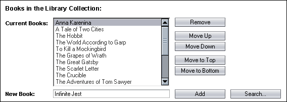
 When having at least one value in the list is required, mark the list -- not the entire component or the entry field --to indicate that, like this:
When having at least one value in the list is required, mark the list -- not the entire component or the entry field --to indicate that, like this:
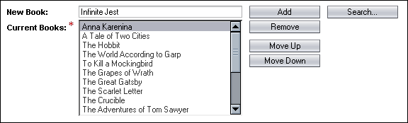
 A maximum length can be set for values, and the entry field will not allow more than that number of characters to be entered. Within that maximum, the list will grow horizontally as larger values are entered. This maximum should be chosen to include all reasonable values for the situation at hand, but is helpful in keeping the buttons from scrolling off the right side of the page otherwise.
A maximum length can be set for values, and the entry field will not allow more than that number of characters to be entered. Within that maximum, the list will grow horizontally as larger values are entered. This maximum should be chosen to include all reasonable values for the situation at hand, but is helpful in keeping the buttons from scrolling off the right side of the page otherwise.
 Provide Add and Remove buttons for the editable scrolling list.
Provide Add and Remove buttons for the editable scrolling list.
 Provide Move Up, Move Down, and optionally Move to Top and Move to Bottom buttons if it makes sense for the application.
Provide Move Up, Move Down, and optionally Move to Top and Move to Bottom buttons if it makes sense for the application.
For more information on button types, see 7.1 Action Buttons.
 Follow these guidelines for all buttons used in the editable scrolling list. These guidelines do not apply to buttons not used in the editable scrolling list.
Follow these guidelines for all buttons used in the editable scrolling list. These guidelines do not apply to buttons not used in the editable scrolling list.
| Button | Description | Additional Guidelines |
|---|---|---|
| Add | Adds the entered item to the list. | See discussion below for a comparison of validated and unvalidated additions. |
| Remove |
Removes the selected items from the list. |
The Remove button is available only while one or more items are selected in the list. Optionally, display a JavaScript alert to confirm removal of the items. |
| Search |
Enables users to search to find an item to add to the editable scrolling list. |
To help users identify an appropriate value to add to the list, provide the Search button if the value exists in some other area of the application. Use the following interaction design:
|
| Move Up |
Moves the selected items one row up in the current list. |
Provide the Move Up button if the order of the choices is relevant. If Move Up is provided, also provide Move Down. If a user applies the Move Up button to a selection containing nonadjacent items, the button works as if the user performed it on each item separately. As a result, the selected items retain their positions relative to one another. The moved items remain highlighted, and the user may move them up another step. If the user continues to click Move Up after the top item goes to the top of the list, continue to move up all selected items that are below unselected items until they are together at the top. When all selected items are already at the top, the Move Up button should be disabled. |
| Move Down |
Moves the selected items one row down in the current list. |
Provide the Move Down button if the order of the choices is relevant. If Move Down is provided, also provide Move Up. If a user applies the Move Down button to a selection containing nonadjacent items, the button works as if the user performed it on each item separately. As a result, the selected items retain their positions relative to one another. The moved items remain highlighted, and the user may move them down another step. If the user continues to click Move Down after the bottom item goes to the bottom of the list, continue to move down all selected items that are above unselected items until they are together at the bottom. When all selected items are already at the bottom, the Move Down button should be disabled. |
Move to Top
|
Moves the selected items to the top of the current list. |
Provide the Move to Top button if the order of the choices is relevant and many items are expected to be in the list. If Move to Top is provided, also provide Move to Bottom. If a user applies the Move to Top button to a selection containing nonadjacent items, move all selected items to the top, keeping them in their original order relative to one another. When all selected items are already at the top of the list, the Move to Top button should be disabled. |
Move to Bottom
|
Moves the selected items to the bottom of the current list. |
Provide the Move to Bottom button if the order of the choices is relevant and many items are expected to be in the list. If Move to Bottom is provided, also provide Move to Top. If a user applies the Move to Bottom button to a selection containing nonadjacent items, move down all selected items to the bottom, keeping them in their original order relative to one another. When all selected items are already at the bottom of the list, the Move to Bottom button should be disabled. |
 To enable users to add an item to the editable scrolling list without verifying that the item is valid, use the following design:
To enable users to add an item to the editable scrolling list without verifying that the item is valid, use the following design:
For an interactive example of an Editable List, see
http://webdev2.sun.com/example/faces/editablelist/editableList.jsp
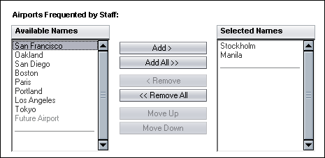
 Use an add-and-remove idiom when users are likely to choose more than two values from an existing list and it is likely they want to see selected values together to verify them, or the order of the selected values is significant, or both.
Use an add-and-remove idiom when users are likely to choose more than two values from an existing list and it is likely they want to see selected values together to verify them, or the order of the selected values is significant, or both.
 The add-and-remove idiom is not intended for strings which are so long as to cause horizontal scrolling on the page.
The add-and-remove idiom is not intended for strings which are so long as to cause horizontal scrolling on the page.
 Design the Available and Selected lists so that 10 to 15 values can be shown
at once in each list. The Available list is comprised of items that are eligible
for selection. The Selected list is comprised of items that have been added
from the Available list. Items in the Selected list are the items that will
have future actions applied to them.
Design the Available and Selected lists so that 10 to 15 values can be shown
at once in each list. The Available list is comprised of items that are eligible
for selection. The Selected list is comprised of items that have been added
from the Available list. Items in the Selected list are the items that will
have future actions applied to them.
 Do not use any grouping methods for the items in the lists. See 7.2.1.3.1
Grouping Menu Items for examples of grouping methods.
Do not use any grouping methods for the items in the lists. See 7.2.1.3.1
Grouping Menu Items for examples of grouping methods.
 Enable the same multiple selection techniques used in 7.2.2.2
Multiple Selection Scrolling List; however, do not note them on the page
as their use is completely optional.
Enable the same multiple selection techniques used in 7.2.2.2
Multiple Selection Scrolling List; however, do not note them on the page
as their use is completely optional.
Multiple selection techniques provide shortcuts for users who would otherwise have to perform the add action repeatedly to select multiple list items. Experienced users expect all add-and-remove idioms to provide these shortcuts.
 Place a label for the entire add-and-remove idiom above the Available and Selected
list labels. Make the label plural, as shown in the example above.
Place a label for the entire add-and-remove idiom above the Available and Selected
list labels. Make the label plural, as shown in the example above.
 Both lists must also have labels for accessibility reasons.
Both lists must also have labels for accessibility reasons.
 Apply headline capitalization to all of these labels (see 2.5 Text Capitalization).
Apply headline capitalization to all of these labels (see 2.5 Text Capitalization).
 If the two lists are too wide to fit side-by-side on the page, orient the lists
vertically, as shown here:
If the two lists are too wide to fit side-by-side on the page, orient the lists
vertically, as shown here:
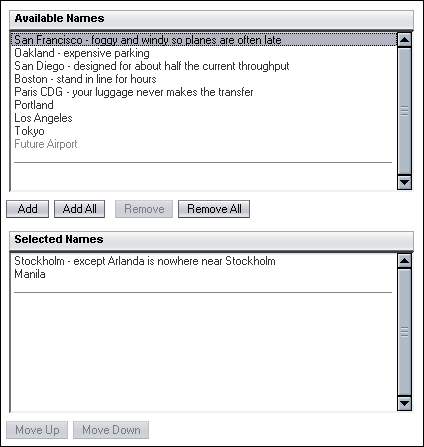
 When the add-and-remove idiom is noneditable (read-only), the lists and
buttons should be replaced with a simple list of text strings separated
by commas or some other separator character, or separated by line
breaks, like this:
When the add-and-remove idiom is noneditable (read-only), the lists and
buttons should be replaced with a simple list of text strings separated
by commas or some other separator character, or separated by line
breaks, like this:
 When the add-and-remove idiom is disabled (does not apply in the current situation), it should have the buttons and lists disabled, like this:
When the add-and-remove idiom is disabled (does not apply in the current situation), it should have the buttons and lists disabled, like this:
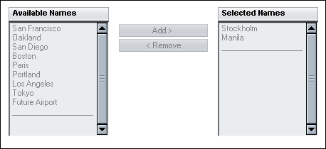
 Allow double-clicking on an item in the Available list to immediately add that
item to the Selected list. Allow double-clicking on an item in the Selected
list to immediately remove that item from the Selected list.
Allow double-clicking on an item in the Available list to immediately add that
item to the Selected list. Allow double-clicking on an item in the Selected
list to immediately remove that item from the Selected list.
 At the bottom of the Available and Selected lists, include a line longer than
the longest possible value. This line, which consists of a string of underscores
(_), is programmatically kept below all the entries as items are added and removed.
This strategy maintains a fixed line width for both lists, which keeps the geometry
of the entire add-and-remove idiom stable. Otherwise, the buttons and lists
would move based on the width of the remaining list items.
At the bottom of the Available and Selected lists, include a line longer than
the longest possible value. This line, which consists of a string of underscores
(_), is programmatically kept below all the entries as items are added and removed.
This strategy maintains a fixed line width for both lists, which keeps the geometry
of the entire add-and-remove idiom stable. Otherwise, the buttons and lists
would move based on the width of the remaining list items.
 Compute the number of underscores based on the desired width of the text box and
the font size of the underscores.
Compute the number of underscores based on the desired width of the text box and
the font size of the underscores.
 If the user selects the string of underscores (either by itself or with other
entries) and clicks any button, nothing should happen.
If the user selects the string of underscores (either by itself or with other
entries) and clicks any button, nothing should happen.
 When one or more selections is required, mark the selected list -- not the entire component -- to indicate that, like this:
When one or more selections is required, mark the selected list -- not the entire component -- to indicate that, like this:
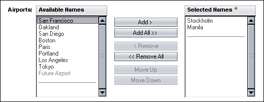
 A label for the entire add-and-remove idiom is optional. If such a label is provided, use a standard field label and place it either
A label for the entire add-and-remove idiom is optional. If such a label is provided, use a standard field label and place it either
 Provide Add and Remove buttons when using the Add-and-Remove idiom. Only one will be enabled at once, however, based on which list the user is on. Remove is disabled when the user is on the Available list, and Add is disabled when the user is on the Selected list. If the user is not on either list, neither will be enabled.
Provide Add and Remove buttons when using the Add-and-Remove idiom. Only one will be enabled at once, however, based on which list the user is on. Remove is disabled when the user is on the Available list, and Add is disabled when the user is on the Selected list. If the user is not on either list, neither will be enabled.
 Provide Add All and Remove All buttons if it makes sense for the application.
Provide Add All and Remove All buttons if it makes sense for the application.
 Provide Move Up and Move Down buttons if it makes sense for the application. These buttons apply exclusively to the Selected list.
Provide Move Up and Move Down buttons if it makes sense for the application. These buttons apply exclusively to the Selected list.
For more information on button types, see 7.1 Action Buttons.
 Follow these guidelines for all buttons used in the add-and-remove idiom.
These guidelines do not apply to buttons not used in the add-and-remove idiom.
Follow these guidelines for all buttons used in the add-and-remove idiom.
These guidelines do not apply to buttons not used in the add-and-remove idiom.
| Button | Description | Additional Guidelines |
|---|---|---|
| Add | Adds items to the Selected list. |
More precisely, the Add button copies all selected items from the Available list and adds them to the Selected list at the end or, if the Selected list is sorted, in the correct order. The Add button then deletes the items from the Available list -- unless they can be added to the selected list multiple times in different contexts so remain there for reuse. Finally, the Add button selects the copied items in the Selected list and deselects any previously selected items in the Available list. The Add button is available only while one or more items are selected in the Available list. |
| Add All |
Moves or copies all items from the Available list to the
Selected list and then selects them in the Selected list. |
Provide the Add All button if users will want to select all the items even occasionally. If Add All is provided, also provide Remove All. The Add All button is available only while the Available list is not empty. |
| Remove |
Removes items from the Selected list. |
More precisely, the Remove button removes the selected items from the Selected list, adds them to the Available list (at the end or, preferably, at their previous positions) and, finally, selects the items in the Available list, deselecting the Selected list. Removing an item from the Selected list has no effect on the Available list if that item is already in the Available list. The Remove button is available only while one or more items are selected in the Selected list. |
| Remove All |
Moves all items from the Selected list to the Available list. |
Provide the Remove All button if users will want to clear the list of selected items even occasionally (for example, to start a whole new selection). Remove All may be provided without Add All. The Remove All button is available only while the Selected list is not empty. |
| Move Up |
Moves the selected items one row up in the selected items list. Applies to the Selected list only. |
Provide the Move Up button if the order of the choices is relevant. If Move Up is provided, also provide Move Down. If a user applies the Move Up button to a selection containing nonadjacent items, the button works as if the user performed it on each item separately. As a result, the selected items retain their positions relative to one another. The moved items remain highlighted, and the user may move them up another step. If the user continues to click Move Up after the top item has hit the top of the list, continue to move up all selected items which are below unselected items, until they are together at the top. When all selected items are already at the top of the list, the Move Up button should be disabled. |
| Move Down |
Moves the selected items one row down in the selected items list. Applies to the Selected list only. |
Provide the Move Down button if the order of the choices is relevant. If Move Down is provided, also provide Move Up. If a user applies the Move Down button to a selection containing nonadjacent items, the button works as if the user performed it on each item separately. As a result, the selected items retain their positions relative to one another. The moved items remain highlighted, and the user may move them down another step. If the user continues to click Move Down after the bottom item goes to the bottom of the list, continue to move down all selected items which are above unselected items, until bthey are together at the bottom. When all selected items are already at the bottom of the list, the Move Down button should be disabled. |
For an interactive example of an Add-and-Remove Idiom, see http://webdev2.sun.com/example/faces/addremove/AddRemove.jsp
The orderable list allows users to manually order the items in single selection and multiple selection scrolling lists. This may be useful if users have to arrange items in order of preference or by some other criteria. The list may be either single-selection or multiple-selection.
 The orderable list is not intended for strings which are so long as to cause horizontal scrolling on the page.
The orderable list is not intended for strings which are so long as to cause horizontal scrolling on the page.
 Do not use the orderable list if any automatic sorting of the list is being provided.
Do not use the orderable list if any automatic sorting of the list is being provided.
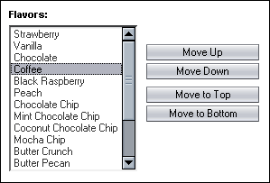
 When the orderable list is noneditable (read-only), the list and
buttons should be replaced with a simple list of text strings separated
by commas or some other separator character, or separated by line
breaks, like this:
When the orderable list is noneditable (read-only), the list and
buttons should be replaced with a simple list of text strings separated
by commas or some other separator character, or separated by line
breaks, like this:
 When the orderable list is disabled (does not apply in the current situation), it should have the buttons and list disabled, like this:
When the orderable list is disabled (does not apply in the current situation), it should have the buttons and list disabled, like this:
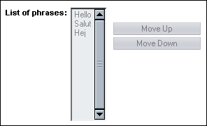
 The list must have a label for accessibility reasons.
The list must have a label for accessibility reasons.
 Provide Move Up and Move Down buttons.
Provide Move Up and Move Down buttons.
 Provide Move to Top and Move to Bottom buttons if it makes sense for the application.
Provide Move to Top and Move to Bottom buttons if it makes sense for the application.
For more information on button types, see 7.1 Action Buttons.
 Follow these guidelines for all buttons used in the orderable list. These guidelines do not apply to buttons not used in the orderable list.
Follow these guidelines for all buttons used in the orderable list. These guidelines do not apply to buttons not used in the orderable list.
| Button | Description | Additional Guidelines |
|---|---|---|
| Move Up |
Moves the selected items one row up in the current list. |
If a user applies the Move Up button to a selection containing nonadjacent items, the button works as if the user performed it on each item separately. As a result, the selected items retain their positions relative to one another. The moved items remain highlighted, and the user may move them up another step. If the user continues to click Move Up after the top item goes to the top of the list, continue to move up all selected items which are below unselected items, until they are together at the top. When all selected items are already at the top of the list, the Move Up button should be disabled. |
| Move Down |
Moves the selected items one row down in the current list. |
If a user applies the Move Down button to a selection containing nonadjacent items, the button works as if the user performed it on each item separately. As a result, the selected items retain their positions relative to one another. The moved items remain highlighted, and the user may move them down another step. If the user continues to click Move Down after the bottom item goes to the bottom of the list, continue to move down all selected items which are above unselected items, until they are together at the bottom. When all selected items are already at the bottom of the list, the Move Down button should be disabled. |
Move to Top |
Moves the selected items to the top of the current list. |
Provide the Move to Top button if many items are expected to be in the list. If Move to Top is provided, also provide Move to Bottom. If a user applies the Move to Top button to a selection containing nonadjacent items, move all selected items to the top, keeping them in their original order relative to one another. When all selected items are already at the top of the list, the Move to Top button should be disabled. |
| Move to Bottom |
Moves the selected items to the bottom of the current list. |
Provide the Move to Bottom button if many items are expected to be in the list. If Move to Bottom is provided, also provide Move to Top. If a user applies the Move to Bottom button to a selection containing nonadjacent items, move down all selected items to the bottom, keeping them in their original order relative to one another. When all selected items are already at the bottom of the list, the Move to Bottom button should be disabled. |
 Do not use special "separator" choices as a distinguisher between "above the line" choices and "leftover" choices -- for that situation, the Add-and-Remove Idiom is the appropriate element to use instead (see 8.2 Add-and-Remove Idiom).
Do not use special "separator" choices as a distinguisher between "above the line" choices and "leftover" choices -- for that situation, the Add-and-Remove Idiom is the appropriate element to use instead (see 8.2 Add-and-Remove Idiom).
For an interactive example of an Orderable List, see http://xdesign.sfbay.sun.com:8080/example/faces/orderablelist/OrderableList.jsp
There are two forms of date and time selection. A simple pop-up calendar for entering dates graphically from a date text field, and a full scheduler panel for more complicated needs that include time, repeat intervals, or other details.
If your task requires the input of a single date into a text field, the pop-up calendar can be used to allow the user to select a date and insert it into the field. In some cases it may be appropriate to display a set of text fields where users can specify, for example, starting and ending dates. Each text field would include its own calendar.
The following two images show how this looks before and after the pop-up calendar is displayed.
Pop-up calendar, before the pop-up calendar is opened:
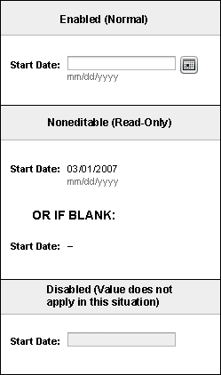
Editable version, after the pop-up calendar is opened:

 Allow users to display the pop-up calendar by clicking the iconic Calendar button,
Allow users to display the pop-up calendar by clicking the iconic Calendar button,  , located to the right of the text field.
, located to the right of the text field.
 When the calendar is popped up, display it below the iconic Calendar button.
When the calendar is popped up, display it below the iconic Calendar button.
The popped up calendar displays the current month and year by default. The current date is bolded in the calendar, and displayed in text at the top of the calendar. The drop-down menus at the top of the calendar can be used to change the current month and year. To step through the months one at a time, users can click the arrow buttons to the left and right of the month drop-down menu.
 If there is a date in the text field when the calendar is invoked, display this date as the default selection in the calendar when it is displayed. Selected dates are bold with a highlighted background. If the text field is empty when the calendar is invoked, show no default selection in the calendar when it is displayed.
If there is a date in the text field when the calendar is invoked, display this date as the default selection in the calendar when it is displayed. Selected dates are bold with a highlighted background. If the text field is empty when the calendar is invoked, show no default selection in the calendar when it is displayed.
 Allow users to close the calendar in the following ways:
Allow users to close the calendar in the following ways:
 When the user selects a date, close the calendar and insert the selected date into the text field.
When the user selects a date, close the calendar and insert the selected date into the text field.
Editable version, after the date is selected from the pop-up calendar:

 If the user closes the calendar by a means other than selecting a date, do not update the text field. If a date had been entered into the text field before the calendar was invoked, do not change it. If the text field was blank when the calendar was invoked, leave it blank.
If the user closes the calendar by a means other than selecting a date, do not update the text field. If a date had been entered into the text field before the calendar was invoked, do not change it. If the text field was blank when the calendar was invoked, leave it blank.
The Scheduler element is used for setting schedules within an application. This element is made up of several simple elements (labels, text fields, buttons, and lists) and a calendar element. It was formerly known as the Date/Time Element. Here is an example:
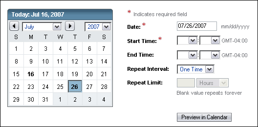
The example above shows the Scheduler element as it would appear within the
context of a larger page. Also shown here is the legend that describes the red
asterisk image associated with the Date field. This asterisk image identifies a required field, and a legend must appear in the appropriate place on the page to inform users that the field is required (see 7.3.2
Editable Text Fields for more information). The asterisk image should appear to the right of the field labels as shown above.
Note that Date is generally a required field. However when the Scheduler element is used on a page with other elements, there may be times when, given the context of the application, it does not make sense to make the Date a required field. In this situation, the Date field can be made optional. This is only allowable for the inline Scheduler element.
An example of a situation where it would not make sense to make the Date required might be when the user has to specify when a report gets run and it is valid to specify a particular date, or just a time that the report will be run every day.
In the above picture, the user can specify the date either by clicking on it in the calendar or entering it into the Date field. The Preview in Calendar button is available if the user enters the date into the Date field and then wants to see it reflected in the calendar before clicking the OK button. The user can also use Preview in Calendar to update the calendar to reflect the values entered into the other applicable fields. Note that time information is not reflected in the calendar.
 When designing the monthly calendar for the Scheduler element, follow
these guidelines:
When designing the monthly calendar for the Scheduler element, follow
these guidelines:
 If an existing schedule is reflected in the Scheduler element, the scheduled dates are displayed in bold with a highlighted background, just as when the user first selects them.
If an existing schedule is reflected in the Scheduler element, the scheduled dates are displayed in bold with a highlighted background, just as when the user first selects them.
The example at the beginning of this section shows how a defined schedule would display when it is opened for viewing or editing. All fields are set to their defined values, and the calendar element displays the scheduled dates.
 Follow these guidelines for the content of the Repeat Interval list, which
is programmable:
Follow these guidelines for the content of the Repeat Interval list, which
is programmable:
 Follow these guidelines for the Repeat Limit field, which sets a limit on
the number of repetitions:
Follow these guidelines for the Repeat Limit field, which sets a limit on
the number of repetitions:
 Provide a Preview in Calendar button (see 7.1 Action Buttons)
to allow users to update the calendar to reflect the data entered in the fields. Changes in these fields are not reflected in the calendar until the Preview in Calendar
button is clicked. Note, however, that when a new date is selected in the calendar, the selection is
treated as the new Date and the values in these fields are used to update the calendar to
reflect the new starting date.
Provide a Preview in Calendar button (see 7.1 Action Buttons)
to allow users to update the calendar to reflect the data entered in the fields. Changes in these fields are not reflected in the calendar until the Preview in Calendar
button is clicked. Note, however, that when a new date is selected in the calendar, the selection is
treated as the new Date and the values in these fields are used to update the calendar to
reflect the new starting date.
 Include simple elements (which are programmable) within the Scheduler
element as required for your application.
Include simple elements (which are programmable) within the Scheduler
element as required for your application.
Various applications might only need a subset of the functionality provided in the preceding example. For example, there might be a need for repeat intervals but not repeat limits. Or, there might only be a need for a Start Time without an End Time. To provide this flexibility, the API to this element should allow for the display of a subset of simple elements. Simpler versions might include the monthly calendar and Date field only for date selection or a pair of drop-down menus for time selection.
The labels used for the time fields, Start Time and End Time, should be programmable based on the application needs. The Start and End labels were used as generic examples. The application developer may choose whatever labels are most appropriate.
If a Repeat Interval is shown, the label for date might be changed to Start Date or something more specific for the date being chosen.
The following example mimics the scheduling fields in a Solaris crontab(1) file (with the exception that the crontab file does not use a year field). Such files do not specify an End Time or a Repeat Limit. Users who might require additional functionality unique to the cron utility would typically use the actual command in a terminal window.
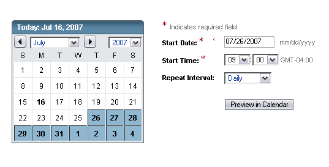
The Scheduler element can be embedded within a page, but can also be invoked in a pop-up window.
As with the Scheduler element embedded within a page, the fields displayed in the Scheduler element in a pop-up window can be displayed in full or adjusted to the needs of the application.
For example, the following picture shows a Scheduler pop-up window that could be used when the user clicks the calendar icon next to a set of fields asking for Scheduler information on a main browser page. The only fields needed are the Date and Time fields. The user specifies the date and time and then clicks OK.
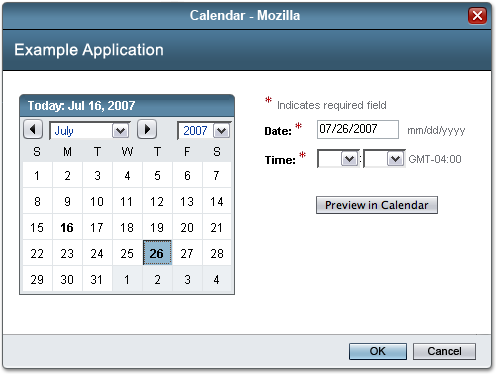
General guidelines for displaying a noneditable version of the Scheduler Element are to show the fields as text only. See 7.3.2 Editable Text Elements for details. The calendar could appear and perhaps allow browsing months and years, but should not allow clicking on new dates. A future version of the guidelines may provide more details for this design.
There are two forms of file selection. Client-Side File Upload is used for selecting files on the client, while File Chooser (and Folder Chooser) are used for selecting files (or folders) on the server. Choose the appropriate one based on the location (client or server) from which the user will be selecting files.
When it is necessary to upload a file from the client to the server, the client-side file upload element can be used. The client-side file upload element is not used to browse files on the server. For this, use the file chooser element (see 8.5.2 File Chooser Element).
The client-side file upload element consists of a labeled text field with an associated Browse... button as shown below. The text field and label should behave like any other text field. See 7.3 Text Elements for guidelines.

There is no design for the client-side file selection window itself, as it is provided by the operating system, and is platform-specific.
When the Browse... button is clicked, the browser-specific client-side file chooser window is displayed. In this window, the user chooses the file to be uploaded to the server. When the user has completed making a selection in this window, the fully qualified name of the selected file is displayed in the text field of the client-side file upload element.
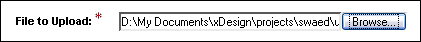
When the page is submitted, the specified file is uploaded to the server and handled by the application. For example, the file may be opened and displayed, or it might be saved.
Note that the Browse... button used in this element is a standard form element. Therefore, the style of the button cannot be made to match the style of the buttons shown in other images in these guidelines.
 When the client-side file upload is disabled (does not apply in the current situation), it should have the button and field disabled, like this:
When the client-side file upload is disabled (does not apply in the current situation), it should have the button and field disabled, like this:
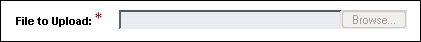
(There is no noneditable client-side file upload, as having a read-only version of an action would not apply.)
For an interactive example of Client-Side File Upload, see http://webdev2.sun.com/example/faces/chooseruploader/fileUploader.jsp
The file chooser element is used to browse files on the server. The file chooser element is based on standard file choosers from Java and Windows applications.
Web browsers, by default, bring up a platform-specific file selection dialog that is used to browse files available to the client the browser is running on. The file chooser element is not used to browse files on the client. To browse files on the client, and then upload a selected file from the client to the server, use the client-side file upload element (see 8.5.1 Client-Side File Upload Element).
The file chooser is used to navigate through the server's file system by searching for a specific file. The list shows all folders and files within the currently selected folder.
The file chooser can be displayed in a pop-up window or inline on a secondary content page in the main browser window. When on a main browser page, it can appear by itself or with other user interface elements that are not specific to the file chooser, but are relevant to the page on which the file chooser is displayed.
Here is an example file chooser shown in a pop-up window:
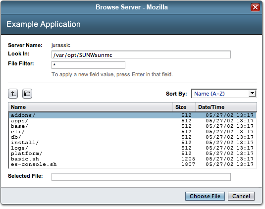
 When the file chooser element appears on a main browser page:
When the file chooser element appears on a main browser page:
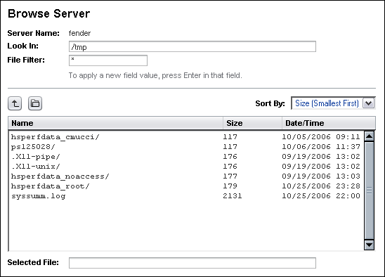
 Place the server name at the top of the dialog page.
Place the server name at the top of the dialog page.
 Include a Look In text field and apply the following guidelines:
Include a Look In text field and apply the following guidelines:
Use the Look In text field to show the hierarchical path to the currently displayed list.
If the folder name specified does not exist, present an inline error message including the value entered in the Look In field (See 14.1 Inline Alert Messages for more details), and reset the Look In field and other fields to the previous valid folder. This avoids losing the location the user had been on, which would have often forced canceling and starting over in order for the user to continue.
 For the list, which shows all folders and files within the currently selected
folder, follow these guidelines:
For the list, which shows all folders and files within the currently selected
folder, follow these guidelines:
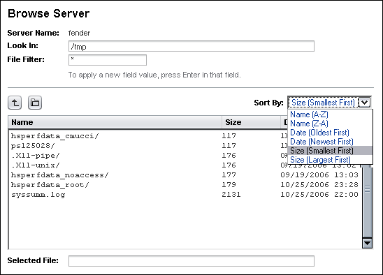
(Each newly opened folder updates the path in the Look In text field).
The Back Up One Level iconic button navigates up one level in the file system hierarchy and displays the files and folders at the new level in the list.
If a file selection is made, clicking the Choose File button returns the full path of the file to the application and invokes the proper window behavior: pop-up windows close and return the file name to the application while inline file choosers return the file name, clear the Selected File text field, and either close, or wait for additional user input at the application designer's discretion.
 Include a Selected File text field and apply the following guidelines:
Include a Selected File text field and apply the following guidelines:
If a file is selected in the list, display the name of the file in the Selected File text field. If multiple files are selected, display all of the files names separated by commas. Do not display folder names in the Selected File text field (see later discussion about the Selected Folder text field).
Allow the user to specify a new path in the Selected File text field. After the user enters the new path and hits enter, update the list and the Look In text field to reflect the new path. If a user types a path that begins with '/' or '\', take that as the full path name. Otherwise, append what the user types to the path in the Look In text field.
Clear selected file text if the user selects a different folder in the list. Replace existing text in the Selected File text field only when the user selects a new file name from the list or types a new file name. No other action should replace existing text in the Selected File text field.
Allow the user to specify a file name in the Selected File text field by typing a full path, or without a path if the file is contained in the current Look In folder. Once the user types in a valid file name and presses the Enter key, the window should react appropriately: pop-up windows should close and return the file name to the application while inline file choosers should return the file name, clear the Selected file text field, and either close or await additional user input at the application designer's discretion.
 If the user makes an error when typing a file or folder name in the Selected File or Selected Folder fields, display an inline alert message (See 14.1 Inline Alerts for more
details), but leave the value entered in the field for the user to edit it.
Note this is slightly different behavior than when the user puts an incorrect
folder name in the Look In field, as in this case leaving the incorrect values
does not lose the location the user had been on.
If the user makes an error when typing a file or folder name in the Selected File or Selected Folder fields, display an inline alert message (See 14.1 Inline Alerts for more
details), but leave the value entered in the field for the user to edit it.
Note this is slightly different behavior than when the user puts an incorrect
folder name in the Look In field, as in this case leaving the incorrect values
does not lose the location the user had been on.
Multiple selection: Most file chooser elements should support multiple selection unless the application designer has a compelling reason not to (such as that only one file selection makes sense for the situation). See the following example of a file chooser element that supports multiple selection.
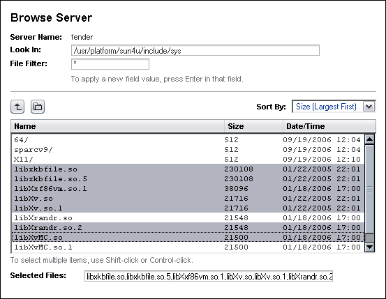
Multiple selection is allowed through standard use of the Shift (contiguous selection) and Ctrl (disjoint selection) keys. In this case, clicking the Choose Files button returns a list of all selected file path names.
 If multiple files can be selected:
If multiple files can be selected:
Folder Chooser Variant: Some applications might require browsing the
server's file structure to locate a folder (rather than a file). This version
of the chooser is called a folder chooser and is slightly different, as shown
below.
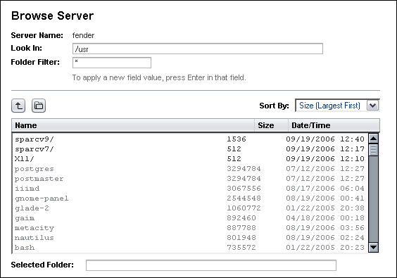
Although files can be selected, no action can be performed on them. The lighter gray color is used to indicate that files cannot be acted upon in the folder selection version of the file chooser. Files are included in the list as an informational aid only, allowing the user to see the entire contents of a given folder.
 The requirements listed for the file chooser element apply to the folder chooser,
with the following exceptions:
The requirements listed for the file chooser element apply to the folder chooser,
with the following exceptions:
Replace the "Choose File" button with a "Choose Folder" button, or the "Choose Files" button with a "Choose Folders" button if multiple selection is allowed.
The "Selected File" field label is changed to "Selected Folder," or the "Selected Files" field label is changed to "Selected Folders" if multiple selection is allowed.
Display the folder name(s) in the Selected Folder(s) text field. Do not display file names there.
Double-clicking a file does not perform any action. (Double clicking a folder opens it as in the file chooser. It does not select that folder.)
(On a future release, the File Filter field may be changed to be a Folder Filter in the folder chooser.)
(There is no noneditable File Chooser or Folder Chooser, as having a read-only version of an action would not apply.)
For an interactive example of a File Chooser, see http://webdev2.sun.com/example/faces/chooseruploader/fileChooser.jsp
For an interactive example of a Folder Chooser, see http://webdev2.sun.com/example/faces/chooseruploader/folderChooser.jsp
The line graph guidelines provide basic visual design specifications. The design elements covered here are primarily limited to font treatments, line weights, color palette, and basic layout guidelines. These designs were developed for implementation with JFreeChart, a Java class library for generating charts, although the designs should be generic enough to use with other packages.
 Line graphs should be displayed on a white background.
Line graphs should be displayed on a white background.
 Graphs should not take on the appearance of a three-dimensional display.
Graphs should not take on the appearance of a three-dimensional display.
 Offer a graph title. The title should provide a general, yet concise, description of the graph.
Offer a graph title. The title should provide a general, yet concise, description of the graph.
 Provide detailed title information in a subtitle placed directly below the graph title.
Provide detailed title information in a subtitle placed directly below the graph title.
 A legend should be provided with the graph.
A legend should be provided with the graph.
 If presenting a duel-axis graph (two y-axis), use separate legends to describe each.
If presenting a duel-axis graph (two y-axis), use separate legends to describe each.
 If possible, include the title "Legend:" above the legend information. If including a title is not possible, provide inline help text with the legend to describe it. For guidelines on providing inline help see 11.1 Inline Help.
If possible, include the title "Legend:" above the legend information. If including a title is not possible, provide inline help text with the legend to describe it. For guidelines on providing inline help see 11.1 Inline Help.
 The visual presentation of the legend may vary based on implementation constraints, but the final design should never visually compete with the graph itself.
The visual presentation of the legend may vary based on implementation constraints, but the final design should never visually compete with the graph itself.
 If the user has selected a specific scale (Daily, Weekly, Monthly), scale the graph accordingly.
If the user has selected a specific scale (Daily, Weekly, Monthly), scale the graph accordingly.
 Space out the tick mark intervals to suit the size of the graph.
Space out the tick mark intervals to suit the size of the graph.
 Use a minimum of 10 pixels distance between the tick labels on an axis.
Use a minimum of 10 pixels distance between the tick labels on an axis.
 If possible, provide tool tips for data points. The tool tips could contain more detailed information about the data points.
If possible, provide tool tips for data points. The tool tips could contain more detailed information about the data points.
 When using time values in charts, follow the localization guidelines for time located in Appendix H - Globalization Requirements.
When using time values in charts, follow the localization guidelines for time located in Appendix H - Globalization Requirements.
 When displaying 24-hour time, add "24-hour time" to the axis label.
When displaying 24-hour time, add "24-hour time" to the axis label.
 To support accessibility, give the user the choice of a graph or table representation of the data. The table display could be offered via the longdesc HTML attribute in the image tag that links to a page that shows the data, or via a configuration option during the setup process for the graph.
To support accessibility, give the user the choice of a graph or table representation of the data. The table display could be offered via the longdesc HTML attribute in the image tag that links to a page that shows the data, or via a configuration option during the setup process for the graph.
Basic Graph
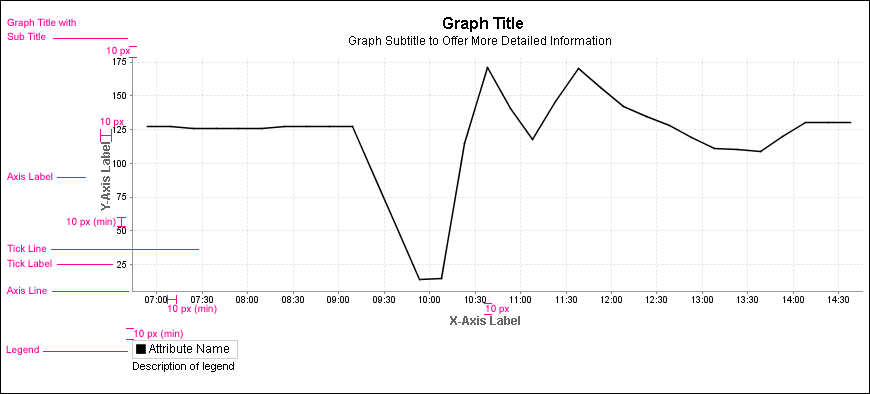
Graph Tick Line Variations: Solid Gray or Dotted Gray Tick Lines
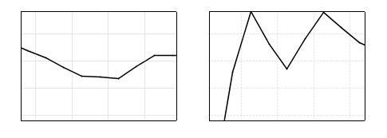
The following palette colors are recommended for use within line charts. The palette colors have been evaluated for accessibility using Vischeck, an online tool that can emulate how a page or graphic will appear to colorblind users. The line graph colors selected mitigate the display differences. See http://vischeck.com/ for more information. Product teams can use alternate colors, as long as the colors are tested for accessibility.
There are two recommended color palettes, a comparative color palette and a threshold palette, which when combined provide a single palette of six colors. Using only six colors (maximum) in any given graph limits the cognitive burden of interpreting a large number of color-coded associations. It also makes distinguishing between multiple attributes and threshold lines easier for the user.
 For users to distinguish between attributes, each attribute charted should use a unique line color.
For users to distinguish between attributes, each attribute charted should use a unique line color.
 The maximum number of attributes that can be presented on a graph at any one time is six.
The maximum number of attributes that can be presented on a graph at any one time is six.
 If you need to use alternate palette colors, see 1.4 Resources for Application Designers to determine the approvals required for doing this.
If you need to use alternate palette colors, see 1.4 Resources for Application Designers to determine the approvals required for doing this.
Threshold lines can be provided on graphs to indicate alarm, status, or other thresholds. There are three colors in the threshold palette which can be used for threshold lines. See 8.6.2 Lines and Data Points for more information. The three colors in the threshold palette indicate severity levels: critical (red), major (yellow/orange) and minor (blue).
 Use the colors in the palette shown below for the threshold lines.
Use the colors in the palette shown below for the threshold lines.
Threshold Palette
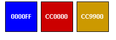
 If a peak threshold needs to be represented in the graph, use any remaining color in the threshold or comparative palettes.
If a peak threshold needs to be represented in the graph, use any remaining color in the threshold or comparative palettes.
 If thresholds need to be presented, only use one attribute per graph and black for the attribute line color as shown in the example below.
If thresholds need to be presented, only use one attribute per graph and black for the attribute line color as shown in the example below.
Single Attribute with Data Points, Threshold Lines, and Peak Threshold Line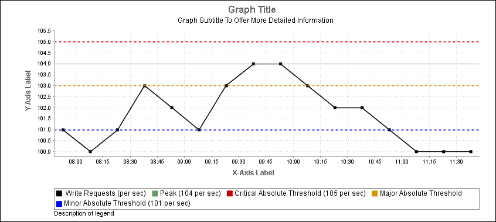
The comparative palette colors are primarily used in graphs that present multiple attribute lines. When graphs present multiple attributes, unique colors for each attribute line helps the user distinguish between them.
 Graphs with multiple attributes should not include threshold lines.
Graphs with multiple attributes should not include threshold lines.
 When threshold lines are not included in the graph, the comparative palette can be extended with colors from the "threshold" palette.
When threshold lines are not included in the graph, the comparative palette can be extended with colors from the "threshold" palette.
 Use the colors in the following palette for charting attributes in multiple attribute graphs.
Use the colors in the following palette for charting attributes in multiple attribute graphs.
Comparative Palette (*plus threshold colors)
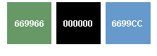
Graph with Multiple Attributes and Duel Axis
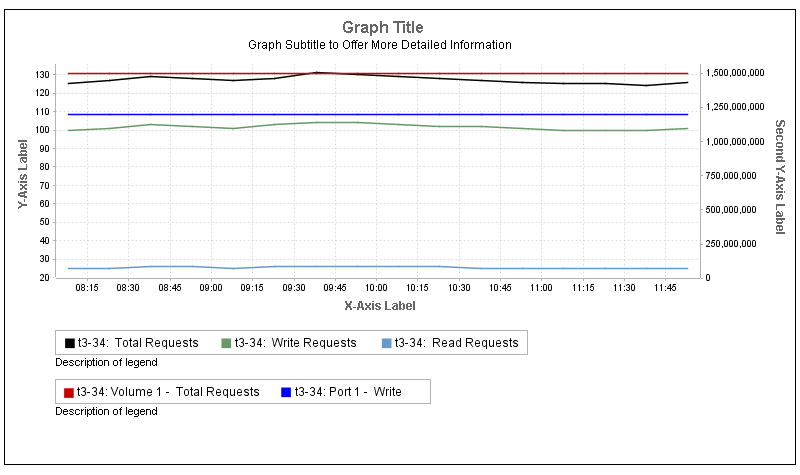
 Graphs do not need a border around them.
Graphs do not need a border around them.
 Graphs must have axis lines which are 1 pixel wide, color #999999.
Graphs must have axis lines which are 1 pixel wide, color #999999.
 Tick mark grid lines should be less than 1 pixel wide, if possible.
Tick mark grid lines should be less than 1 pixel wide, if possible.
 Tick mark lines should be solid and a light gray color, such as #CCCCCC or lighter. A dotted or dashed gray line is also acceptable.
Tick mark lines should be solid and a light gray color, such as #CCCCCC or lighter. A dotted or dashed gray line is also acceptable.
 Threshold lines should be dotted (or very short dashes). The dots should be 2 pixels wide and 2 pixels high.
Threshold lines should be dotted (or very short dashes). The dots should be 2 pixels wide and 2 pixels high.
 A peak threshold line should be a solid line, in a lighter line weight than the attribute line.
A peak threshold line should be a solid line, in a lighter line weight than the attribute line.
 Data points are represented as small, 4 x 4 pixel squares which match the colors of the associated lines.
Data points are represented as small, 4 x 4 pixel squares which match the colors of the associated lines.
 Use long dashes to indicate predicted data as shown in the example below.The dashed, predictive, segment of the attribute line uses the same color and line weight characteristics as the non-predictive segment.
Use long dashes to indicate predicted data as shown in the example below.The dashed, predictive, segment of the attribute line uses the same color and line weight characteristics as the non-predictive segment.
Predictive Graph With Dashed Lines
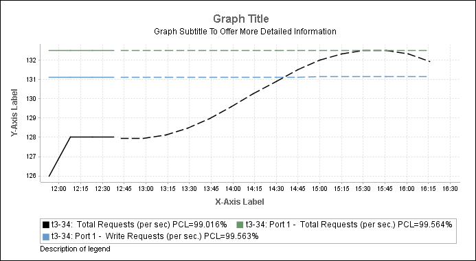
 All text should use "Arial," or the system's default sans serif font.
All text should use "Arial," or the system's default sans serif font.
 The default type style is: plain, 12px/pt, black, unless specified otherwise.
The default type style is: plain, 12px/pt, black, unless specified otherwise.
 Tick mark labels align to the graph. If tick mark labels are on the left of the table, the text aligns right. If tick mark labels are on the right of the table, the text aligns left. If the tick mark labels are above or below the table, the label center aligns to the tick line that it refers to.
Tick mark labels align to the graph. If tick mark labels are on the left of the table, the text aligns right. If tick mark labels are on the right of the table, the text aligns left. If the tick mark labels are above or below the table, the label center aligns to the tick line that it refers to.
 Tick mark label text is "Arial," 10 px/pt.
Tick mark label text is "Arial," 10 px/pt.
 To conserve horizontal space, tick mark labels should be forced to wrap onto two lines (i.e. Oct 17 on top line and 10:00 AM on the 2nd line).
To conserve horizontal space, tick mark labels should be forced to wrap onto two lines (i.e. Oct 17 on top line and 10:00 AM on the 2nd line).
 Axis titles should be separated 10 pixels from the tick mark labels.
Axis titles should be separated 10 pixels from the tick mark labels.
 Vertical axis labels are rotated 90 degrees to read vertically beside the axis.
Vertical axis labels are rotated 90 degrees to read vertically beside the axis.
 Text for the axis labels is "Arial," Bold, 12 pt, #666666.
Text for the axis labels is "Arial," Bold, 12 pt, #666666.
 If the axis label is above or below the table, the label is center-aligned to the graph.
If the axis label is above or below the table, the label is center-aligned to the graph.
 Text for graph title is "Arial", Bold, 16 pt.
Text for graph title is "Arial", Bold, 16 pt.
 Text for the subtitle for the graph is: "default."
Text for the subtitle for the graph is: "default."
 Graph title and subtitle text should be center-aligned to the graph, and positioned 10 pixels above it.
Graph title and subtitle text should be center-aligned to the graph, and positioned 10 pixels above it.
 Text for property page title is: "Arial", Bold, 12 pt, #666666.
Text for property page title is: "Arial", Bold, 12 pt, #666666.
 Text for the property page subtitle is: "default."
Text for the property page subtitle is: "default."
 Property page title and subtitle text should be center-aligned to the graph, and positioned 10 pixels above it.
Property page title and subtitle text should be center-aligned to the graph, and positioned 10 pixels above it.
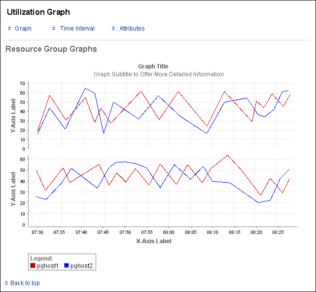
 Text for the legend data is: "default."
Text for the legend data is: "default."
 Text for the legend title, if presented, is: "Arial", Bold, 12 pt, #666666.
Text for the legend title, if presented, is: "Arial", Bold, 12 pt, #666666.
 If a description of the legend is provided, it should follow the style guidelines for "Inline Help", see 11.1 Inline Help.
If a description of the legend is provided, it should follow the style guidelines for "Inline Help", see 11.1 Inline Help.
While only line graphs are detailed above, there are many other graph types which will be appropriate to different situations. Limited information for other graph types is provided below, and detailed guidelines for other graph types may be provided in a later release.
 When creating pie charts, do not use 3D representations as they distort the data.
When creating pie charts, do not use 3D representations as they distort the data.
Additional tips for creating graphs can be found at this external resource: http://lilt.ilstu.edu/gmklass/pos138/datadisplay/sections/goodcharts.htm#Times%20Series%20Charts
This external reference is provided for your supplementary information. It is not part of the Web Application Guidelines. If there are any conflicts between this document and the Web Application Guidelines, use the web application guidelines for building your application. Also, some of the tips included in that document may not be possible in JFreeChart.
This section provides design specifications for user interface elements that are used within Sun-branded portal pages. A definition of a portlet is given, and the portlet table and portlet tab components are discussed. Basic page layout suggestions for presentation of a portlet within a Web page are also presented. Navigation or technical considerations of portal site design are not discussed.
The portlet table and portlet tab elements described here are based on the components in the Sun Common UI Component Library (in open source, the Project Woodstock components), but shown with a visual treatment specifically for use in the portlet environment.
Portlets are Java-based Web constructs, managed by a portlet container, which offer aggregated, customized, and dynamic content. They are presented on a Web portal page containing one or many portlets. For more information refer to the JSR (Java Specification Request) 168 Portlet Specification.
This portlet user interface design is comprised of the portlet content area and a title bar. The title bar contains the portlet title and the portlet controls.
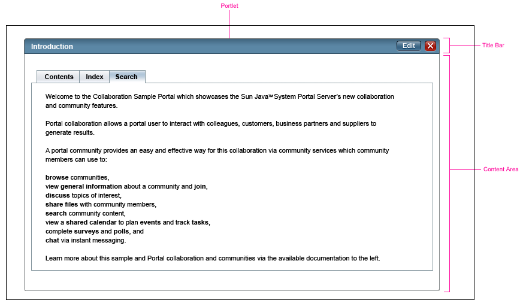
A close button is provided in the far right corner to close that portlet.
Portlets also offer action controls which act on the level of the portlet. The controls are initiated through an Edit drop-down menu. This menu is placed at the top right, left only of the close control.
The drop-down menu generally contains items that allow users to modify the portlet's view and content. Some examples include collapsing or hiding the portlet container, changing its position on a page, or setting preferences for what is to be shown in the portlet.
An additional drop-down menu item may launch a "Help" window page as a secondary window. For guidelines regarding secondary windows, refer to section 3.8 Secondary Content Pages. Development teams may also want to include application-specific buttons.
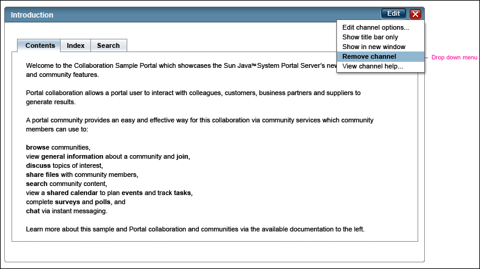
 The Edit drop-down menu remains open until the user makes a menu selection or clicks the drop-down toggle button to dismiss the menu.
The Edit drop-down menu remains open until the user makes a menu selection or clicks the drop-down toggle button to dismiss the menu.
 Edit Drop-down menu selections should be visually indicated by highlighting the selected item, or by using a checkmark icon. Use the same highlight color chosen for other areas within the application. The highlight selection color should be consistent throughout the user interface.
Edit Drop-down menu selections should be visually indicated by highlighting the selected item, or by using a checkmark icon. Use the same highlight color chosen for other areas within the application. The highlight selection color should be consistent throughout the user interface.
Regardless of functionality, both controls use the same visual characteristics to indicate three different action states: default (not pressed), hover, and pressed. See the examples below:
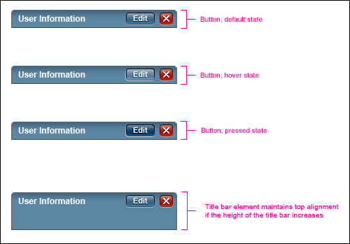
 Portlet content area should have a white background color, unless a portlet is used for login.
Portlet content area should have a white background color, unless a portlet is used for login.
 The border for the content area should be a 1-pixel gray line.
The border for the content area should be a 1-pixel gray line.
 If a portlet is used for user login, use a background gradient as shown in the following section, to emphasize and distinguish it from other portlets on the page.
If a portlet is used for user login, use a background gradient as shown in the following section, to emphasize and distinguish it from other portlets on the page.
As an initial configuration, portlets are typically combined within a Web portal page. Users can most often tailor portlet configuration and content from this presentation. Consistent spacing between portlets will help to maintain a usable page design, despite changes to the portlet configurations. The recommended spacing between portlets is illustrated below.
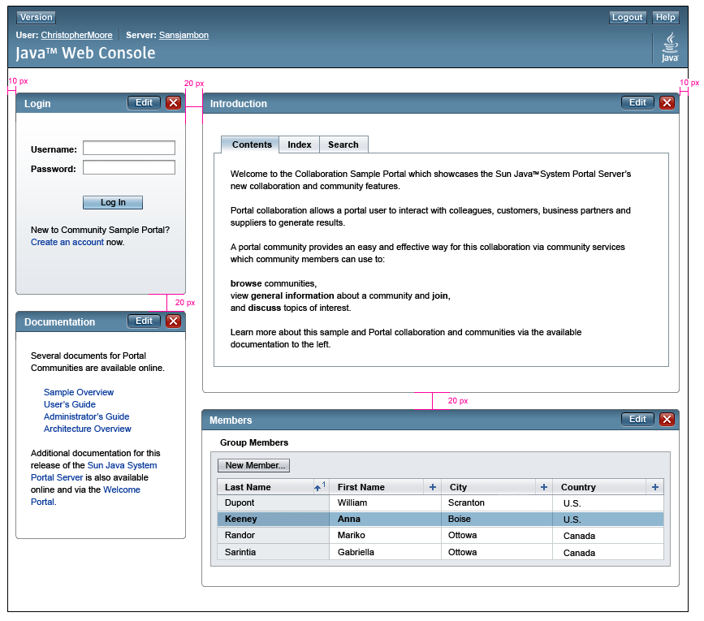
 Portlets should be spaced 20 pixels apart from one another, and other components, when combined on a Web portal page together.
Portlets should be spaced 20 pixels apart from one another, and other components, when combined on a Web portal page together.
 Like other page elements, portlets should also maintain the 10-pixel margin for the page edge.
Like other page elements, portlets should also maintain the 10-pixel margin for the page edge.
 If a specific portlet needs to be emphasized on the page, place it in the upper left-hand corner of the content area.
If a specific portlet needs to be emphasized on the page, place it in the upper left-hand corner of the content area.
The portlet table is used within the content area of a portlet. The table design for a portlet is a modified version of the Sun Common UI Component Library (in open source, the Project Woodstock components) table design. It offers all of the same functionality as the Sun Common UI Component Library, yet has a different visual treatment for presentation within a portlet window.
The portlet table is distinguished from the standard table by its visually diminished table title and title bar background, no table background element, and different visual treatment for the table action bar and column headers. These combined differences allow the portlet table to exist within the portlet without visually overwhelming it and distracting the user from the data inside.
While the portlet table offers the same functionality as the standard Sun Common UI Component Library (in open source, the Project Woodstock components) table, you should avoid employing full table functionality in a portlet environment. Full table functionality, with its visual affordances, can easily overwhelm the condensed portlet display and make it difficult for users to find information.
The ideal presentation of the portlet table is a property table or a table with only a few actions. If the tabular data needs more robust table functionality, you should redirect users to another Web page containing a standard table display.
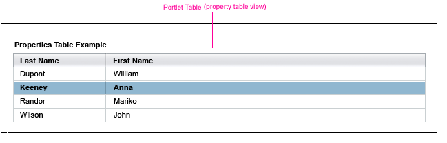
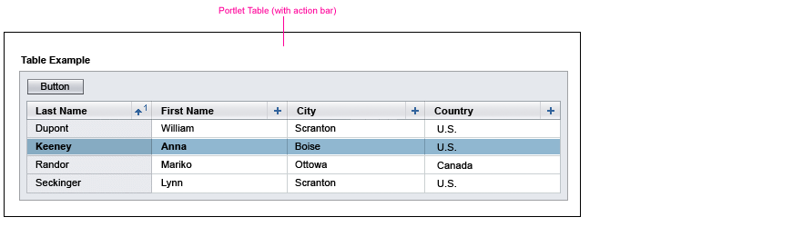
 Avoid offering full table functionality with a portlet table.
Avoid offering full table functionality with a portlet table.
 When a lighter weight table is needed outside the portal, just use the standard table and leave off the action bar. Only use the portal light weight table inside portals.
When a lighter weight table is needed outside the portal, just use the standard table and leave off the action bar. Only use the portal light weight table inside portals.
 Restrict the width of the table to ensure that the portlet content and controls are always visible on the desktop.
Restrict the width of the table to ensure that the portlet content and controls are always visible on the desktop.
The portlet mini-tab group is used within the content area of a portlet. The mini-tab group is a modified version of the Sun Common UI Component Library (in open source, the Project Woodstock components) tab component design. The portal tabs can only have one level of tabs, as opposed to the standard tab design which can have up to three levels. The portlet tab design offers a simple means of switching views between a few tabbed content panes. It is visually distinct from the standard Sun Common UI Component Library tab design because background shading behind the tabs is absent and a containment box encloses the tabbed pane. See the example below:
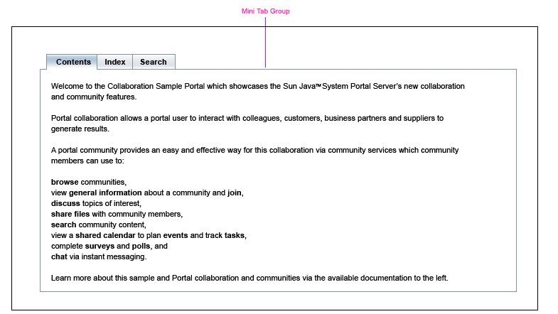
 Portlet tabs are restricted to one level.
Portlet tabs are restricted to one level.
 Portlet tabs should not wrap to a second tab row or cause a scroll bar within the portlet.
Portlet tabs should not wrap to a second tab row or cause a scroll bar within the portlet.
 Restrict the number of tabs to ensure that the portlet content and controls are always visible on the desktop.
Restrict the number of tabs to ensure that the portlet content and controls are always visible on the desktop.
| [ Table of Contents | 0 Revision History | 1 Introduction | 2 Visual Design | 3 Windows and Pages | 4 Mastheads | 5 Top-Level Navigation | 6 Content Area | 7 Simple Elements | 8 Complex Elements | 9 Tables | 10 Topology | 11 Contextual Help | 12 Search | 13 Wizards | 14 Alerts and Messages | 15 Progress Indicators | 16 Alarms and Status Indicators | 17 Login Page | 18 Version Page | Appendices ] |
| Privacy Policy | Terms of Use | Trademarks | Copyright 2007 Sun Microsystems, Inc. |